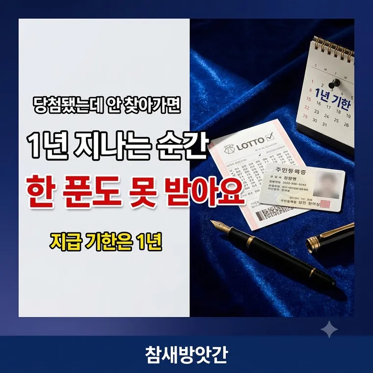

로또 당첨금 수령방법 완벽 정리: 금액별 수령 장소와 필수 준비물
당첨됐다고 아무 데서나 받을 수 있는 게 아닙니다. 금액마다 가는 곳이 다르고, 기한을 넘기면 돈이 사라집니다.

금액에 따라 가는 곳이 다릅니다
| 당첨금 | 받는 곳 |
|---|---|
| 5만원 이하 | 전국 복권 판매점 |
| 5만원 초과 ~ 200만원 이하 | NH농협은행 지점 |
| 200만원 초과 | 서울 NH농협은행 본점 |
4등 5만원과 5등 5,000원은 판매점에서 바로 현금으로 줍니다. 복권을 취급하는 편의점도 됩니다. 원하면 같은 금액만큼 새 복권으로 바꿔 갈 수도 있습니다.
간판에 NH농협은행이라고 적힌 곳이어야 합니다.
지역 농협이나 축협은 당첨금 지급을 하지 않습니다.
1등과 고액 2등은 서울 본점까지 가야 합니다. 지방에 사셔도 마찬가지입니다. 고액 당첨금은 본점 전담 창구에서만 처리합니다.
기한은 1년입니다
추첨일 다음 날부터 1년입니다. 토요일에 추첨했다면 일요일부터 세기 시작합니다.
이 기한을 넘기면 끝입니다. 1등이라도 한 푼도 못 받습니다.
마지막 날이 주말이나 공휴일이면 다음 영업일까지는 됩니다. 그래도 미루지 않는 편이 낫습니다.
1년이 지나면 소멸 당첨금이 되어 전액 복권기금으로 들어갑니다. 저소득층 지원 같은 공익사업에 쓰입니다. 소멸된 뒤에는 어떤 방법으로도 돌려받을 수 없습니다.
복권 용지가 없으면 못 받습니다
가장 중요한 대목입니다. 로또는 이름이 적혀 있지 않은 증서입니다. 용지를 가진 사람이 당첨자입니다.
번호를 외우고 있어도, 산 가게가 어디인지 알아도, 용지가 없으면 지급받을 수 없습니다.
5만원이 넘는 금액을 받을 때는 신분증도 함께 내야 합니다. 주민등록증, 운전면허증, 여권 중 하나면 됩니다.
사자마자 뒷면에 서명해 두세요
복권 뒷면에 이름과 주민등록번호를 적는 칸이 있습니다. 사는 즉시 적어두시기 바랍니다.
잃어버리거나 도난당했을 때, 거기 적힌 서명이 이 복권이 내 것이라고 주장할 근거가 됩니다. 아무것도 안 적혀 있으면 주운 사람이 가져가도 막을 방법이 없습니다.
용지가 상하면 지급이 거절될 수 있습니다
바코드나 번호를 읽을 수 없을 만큼 훼손되면 당첨금을 못 받는 경우가 있습니다.
물에 젖거나, 햇볕에 오래 두어 글자가 날아가거나, 세탁기에 들어가는 일이 실제로 생깁니다. 지갑이나 서류 봉투에 평평하게 넣어 보관하시는 편이 안전합니다.
미루다 보면 1년이 금방 갑니다. 확인하는 데는 1분도 안 걸립니다.
자주 묻는 질문
5만원 이하는 전국 복권 판매점, 5만원 초과 200만원 이하는 NH농협은행 지점, 200만원 초과는 서울 NH농협은행 본점에서 받습니다. 지역 농협이나 축협에서는 지급하지 않습니다.
추첨일 다음 날부터 1년입니다. 기한이 지나면 전액 소멸되어 복권기금으로 귀속되며, 이후에는 어떤 방법으로도 받을 수 없습니다.
받을 수 없습니다. 로또는 실물 용지 자체가 권리를 증명하는 증서입니다. 번호를 알고 있어도 용지 원본이 없으면 지급되지 않습니다.
분실하거나 도난당했을 때 소유권을 주장할 근거가 되기 때문입니다. 구매 직후 뒷면의 성명과 주민등록번호 칸을 적어두는 것이 안전합니다.